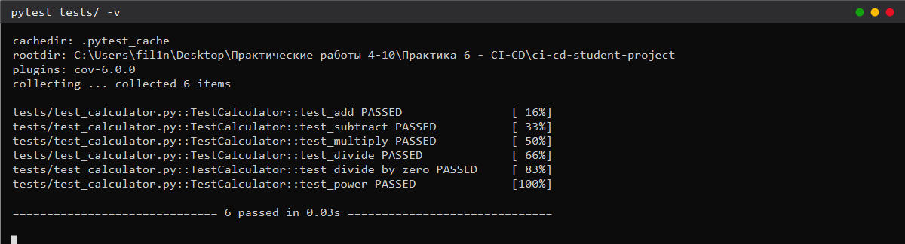
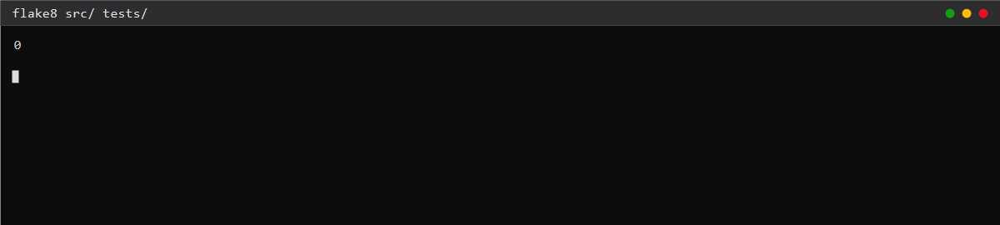

Выполнил(а): ______________________________________ Группа: ______________
Освоить основы непрерывной интеграции с помощью GitHub Actions для автоматического тестирования кода.
ci-cd-student-project/ ├── src/calculator.py ├── tests/test_calculator.py ├── .github/workflows/ci.yml ├── requirements.txt └── README.md
Класс Calculator содержит методы add, subtract, multiply, divide (с проверкой деления на ноль) и power. Тесты на pytest проверяют все операции, включая выброс ValueError.
Файл .github/workflows/ci.yml содержит три задания: test (матрица Python 3.10–3.12, pytest и coverage), lint (flake8, зависит от test) и security (bandit, загрузка HTML-отчёта артефактом).


1. Что происходит при пуше в ветку main?
GitHub Actions запускает workflow, у которого в on.push.branches указана ветка main: выполняются задания test, lint и security, при успехе формируется отчёт о покрытии и артефакт.
2. Как матрица стратегии влияет на выполнение тестов?
Job test запускается несколько раз — по одному на каждую версию Python из matrix.python-version; тесты должны пройти на всех версиях.
3. Что означает needs: test в job lint?
Job lint стартует только после успешного завершения job test.
4. Как можно получить отчет о покрытии кода?
Запустить pytest --cov=src --cov-report=xml; файл coverage.xml загружается в Codecov, а локально отчёт выводится в консоль или HTML.
5. Что такое artifact и для чего он используется?
Артефакт — файл (отчёт, лог, сборка), сохраняемый workflow и доступный для скачивания после выполнения; в работе так сохраняется security-report.html.
Создан проект с калькулятором и тестами, настроен CI-workflow из трёх заданий, локально подтверждено прохождение тестов и отсутствие замечаний flake8. Для публикации требуется разместить проект в GitHub-репозитории и добавить бейдж статуса.